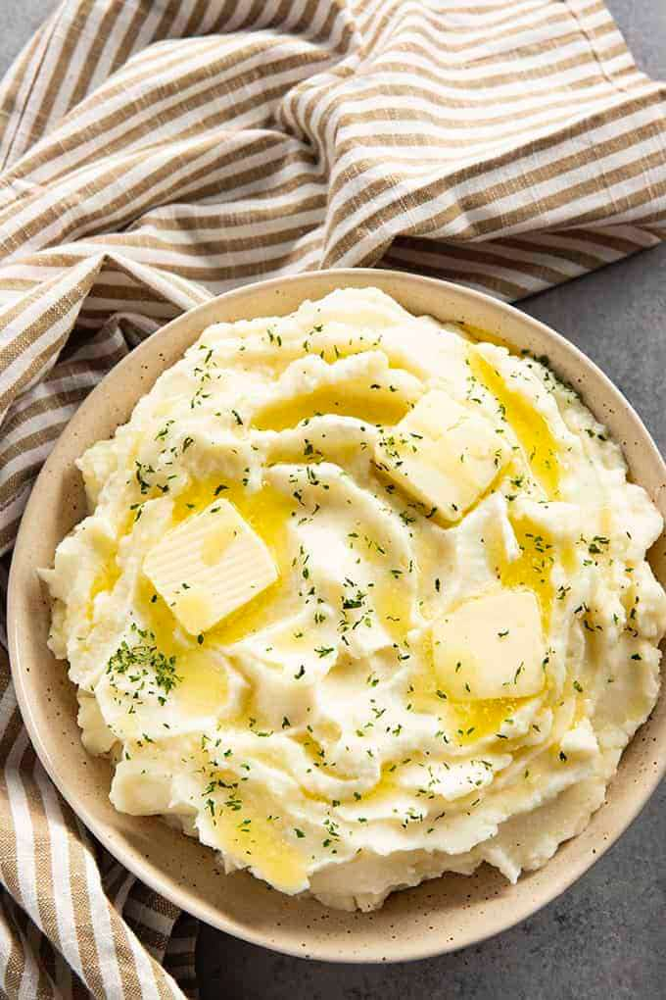

Instant Pot Mashed Potatoes
Side Dish
Servings6
PrepPT10M
CookPT10M

Ingredients
- 3 Pounds Potatoes (6 medium, Peeled and Sliced)
- Water to Cover Potatoes (About 4-5 cups)
- 2 Teaspoons Salt (Divided)
- 1/4 Cup Butter
- 1/4 Cup Sour Cream
- 1/4 Cup Milk
- 1/2 Teaspoon Garlic Powder
- 1/2 Teaspoon Pepper
Directions
- Place the peeled and sliced potatoes into the bottom of the instant pot.
- Cover with water and add 1 teaspoon of salt.
- Place the lid on the instant pot and set the valve to seal.
- Cook on manual pressure for 8 minutes.
- When the timer goes off, turn the instant pot off.
- Quick release the pressure from the pot.
- Drain the potatoes and return to the instant pot.
- Add the remaining salt, pepper, garlic powder, butter, milk and sour cream to the potatoes. Mash until smooth.
- Serve topped with parsley if desired.
Source
https://thesaltymarshmallow.com/instant-pot-mashed-potatoes/
This page includes Schema.org Recipe structured data for recipe importers.